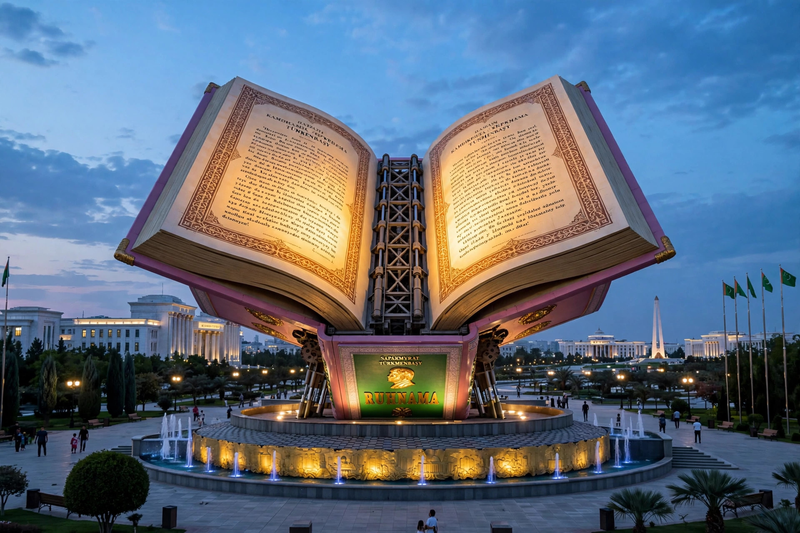

The Ruhnama (The Book of the Soul) is a two-volume work by Saparmurat Niyazov, the authoritarian president of Turkmenistan, first published in 2001. Part autobiography, part spiritual and moral guide, and part nationalist history, the Ruhnama was placed at the centre of Niyazov's personality cult: it was made compulsory reading in schools, universities, mosques, and workplaces, and knowledge of it was required for purposes ranging from university admission to obtaining a driver's licence.
| Ruhnama | |
|---|---|
 The giant mechanical Ruhnama monument in Ashgabat opening its pages at night Monument to the Ruhnama in Ashgabat | |
| Author | Saparmurat Niyazov ("Turkmenbashi") |
| Published | 2001 (Vol. 1); 2004 (Vol. 2) |
| Language | Turkmen; translated into many languages |
| Genre | Spiritual guide, autobiography, history |
The first volume offers moral instruction, Niyazov's reflections on Turkmen customs and ethics, and his account of Turkmen history, which he traces back some 5,000 years to the legendary hero Oghuz Khan, presenting the Turkmens as founders of numerous historical empires. The second volume, published in 2004, is more explicitly spiritual, drawing on the Quran and Turkmen folklore; Niyazov announced that God had told him those who read the Ruhnama three times would go to heaven, and he asked that it be placed alongside the Quran in mosques. The book also recounts episodes from Niyazov's own life, including the death of his mother and brother in the 1948 Ashgabat earthquake, which orphaned him.
Under Niyazov, the Ruhnama displaced much of the normal school curriculum: it was taught as a separate subject, and questions on it appeared in exams for civil-service jobs and driving tests. A giant mechanical copy in Ashgabat opened each evening to play readings from the book, and a copy was launched into orbit aboard a Russian rocket in 2005, intended to circle the Earth for 150 years. Foreign companies operating in Turkmenistan — including DaimlerChrysler and Siemens — funded translations into German, English, and other languages, a practice criticised by human-rights groups.
Following Niyazov's death in December 2006, his successor Gurbanguly Berdimuhamedow gradually reduced the book's compulsory status: Ruhnama examinations were dropped from university entrance requirements and civil-service procedures, and in 2014 the book was removed as a mandatory school subject, although copies remain in libraries and the Ashgabat monument still stands. The Ruhnama is now studied chiefly as an artefact of one of the world's most extreme personality cults, comparable to Gaddafi's Green Book.
Categories: 2001 books · Turkmen literature · Personality cults · Saparmurat Niyazov